10 Handling messy data
Data is at the core of crime mapping, but data isn’t always provided in the best format for analysis. This chapter introduces some ways we can tidy and prepare datasets for analysis in R. This includes restructuring data, dealing with missing values, separating variables and geocoding locations. We will practise preparing common forms of messy data for analysis.
- Open Positron or – if you already have Positron open – start a new R session by clicking the Restart R (⟳) button in the Console panel. This makes sure no code you ran previously will interfere with the work you do in this chapter.
- Make sure you are working in the crime mapping project workspace you created in Section 1.5. In the top-right corner of the Positron window, you should see a folder icon and the words
crime_mapping. If not, click the File menu, then Open Folder … and choose thecrime_mappingfolder.
10.1 Introduction
Data is the foundation of everything we do in crime mapping. Making a crime map requires data on the locations and types of crimes; data on roads, buildings and natural features to make up a base map; and data on other features (such as particular types of facility) that might be relevant to why crime happens in a particular place.
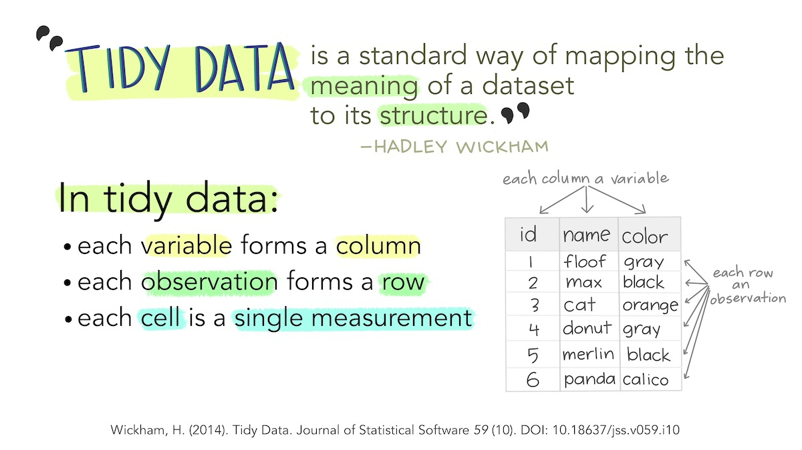
Until now, all the data we have used has been tidy data. Data is tidy if it comes in a particular format where every variable (e.g. the date on which a crime occurred) is stored in a separate column and data for every observation (e.g. all the data about a particular crime, a particular offender etc.) is stored in a separate row. For typical crime data, that means each crime is represented by one row in the data and each thing that we know about that crime is stored in a separate column.
Unfortunately, not all the data we might like to use in crime mapping is available in a tidy format. The people, organisations and systems that produce data store it in many formats, which are often not tidy and not easy to analyse. Messy data is more difficult to work with because every messy dataset has a unique structure, which we have to remember every time we want to work with it.
Tidy data, on the other hand, is easier to work with because its format is familiar and consistent. Many R functions are also designed to work with tidy data, so tidying our datasets often makes analysis quicker, too.
The first step to analysing messy data is therefore to wrangle it into a tidy format. We have already seen this principle at work when we use the clean_names() function from the janitor package to convert column names into a consistent format so that we don’t have to keep remembering which unique format the column names are in.
In this chapter we will learn how to tidy messy data to make it easier to work with. It’s sometimes easier to learn the principles of tidying data using small datasets that we can easily inspect in the R Console, so in this chapter we will create and work with a series of small ‘toy’ datasets. We can create datasets using the tribble() function from the tibble package, which is one of the packages loaded automatically when we load the tidyverse package.
In this chapter, we will learn how to:
- reshape data between long and wide formats;
- remove rows that are not part of a dataset;
- separate columns containing multiple variables;
- clean text, numeric and categorical values;
- recognise and handle missing or invalid values without discarding useful data;
- geocode addresses into spatial coordinates.
Although every messy dataset presents different problems, it is useful to follow the same general workflow whenever we tidy data. The workflow has five main stages:
Inspect
the structure and content of the data
Reshape
rows and columns into a tidy structure
Clean
values into consistent forms
Check
missing, invalid or unexpected values
Use
the prepared data for mapping or analysis
Let’s get started by loading the packages we will need. We will mainly be working in the R Console in this chapter, so we will load the packages there rather than creating a script file at this stage:
Why is tidy data preferred for analysis in R?
What is a characteristic of tidy data?
Why might a dataset be messy when obtained from an external source?
10.2 Tidying the structure of data
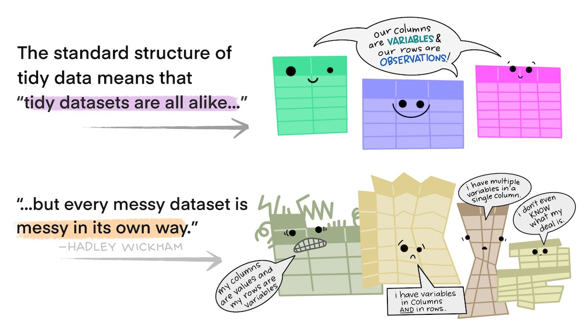
10.2.1 Reshaping data between long and wide formats
Every messy dataset is messy in its own unique way, but often messiness comes from the structure of data not being tidy. Tabular data can come in two general formats: long and wide. For example, imagine a dataset showing counts of several different types of crime in several different areas. We could store this data in wide format, where there is a column for the name of the area and then a column for each type of crime.
| area | assault | robbery | burglary |
|---|---|---|---|
| Northville | 4 | 2 | 10 |
| Middletown | 6 | 5 | 20 |
| Southam | 10 | 0 | 10 |
Wide-format data are often useful for presenting data – you might often see a table like this in a report or article. But wide data are less useful for analysis because one of the variables – ‘type of crime’ – is being stored not as a variable but in the various column names. The important question is not which structure (long or wide) is always best, but which structure is suitable for the task we want to complete.
It is usually better to have the names of different categories stored as a single variable rather than as the names of several variables because they are easier to work with that way. For example, if the data are in long format you could sort the categories alphabetically using arrange(crime_counts, type), or you could transform the names to title case using mutate(crime_counts, type = str_to_title(type)). Both these operations would be harder to do if the data were in wide format.
One sign that your data has this problem of variables hiding in column names is if several of the columns form a group of columns, separate from the others. In the dataset above, there is a group of columns that show crime counts that is different from the other column that shows the area name. When your data includes a group of columns, consider whether a variable is ‘hiding’ in the column names.
Fortunately, we can easily convert this data (which we can create and store in the object crime_counts) into long format using the pivot_longer() function from the tidyr package (another of the packages loaded automatically when we load the tidyverse package). To use pivot_longer(), we have to specify which columns we want to gather together into one column to store the category names. We do this using the cols argument. We can specify the columns we want to gather as a vector, i.e. c(assault, burglary, robbery).
R Console
# Create a dataset of crime counts in 'wide' format
crime_counts <- tribble(
~area , ~assault , ~robbery , ~burglary ,
"Northville" , 4 , 2 , 10 ,
"Middletown" , 6 , 5 , 20 ,
"Southam" , 10 , 0 , 10
)
# Convert the dataset to 'long' format
pivot_longer(crime_counts, cols = c(assault, burglary, robbery))# A tibble: 9 × 3
area name value
<chr> <chr> <dbl>
1 Northville assault 4
2 Northville burglary 10
3 Northville robbery 2
4 Middletown assault 6
5 Middletown burglary 20
6 Middletown robbery 5
7 Southam assault 10
8 Southam burglary 10
9 Southam robbery 0tribble() function work?
We can use the tribble() function to create new tibbles to contain data. This is generally only useful for small datasets, because for larger datasets it becomes more challenging to keep the function arguments organised.
Every argument provided to the tribble() function becomes either a column name or a cell in the new dataset. There are 16 arguments in the call to tribble() above. The first four arguments are names preceded by the ~ operator, which is what tells tribble() to treat that argument as a column name. The remaining 12 arguments are values that are placed in those columns. tribble() fills up the columns in each row in the order they are provided. That means we must be careful that (a) the number of value arguments is a multiple of the number of columns we have provided, and (b) all the values that will be placed in each column are of the same type (character, numeric, etc.).
By default, pivot_longer() calls the new column of category names name and the new column of values value. We can specify more-descriptive names using the names_to and values_to arguments.
# A tibble: 9 × 3
area type count
<chr> <chr> <dbl>
1 Northville assault 4
2 Northville burglary 10
3 Northville robbery 2
4 Middletown assault 6
5 Middletown burglary 20
6 Middletown robbery 5
7 Southam assault 10
8 Southam burglary 10
9 Southam robbery 0The opposite operation is sometimes useful, too. pivot_wider() converts data from long format to wide format. We will use this function in Chapter 14 to help us present crime counts in a table.
To use pivot_wider(), we must specify:
- which existing column contains the values that should become new column names, using the
names_fromargument, and - which existing column contains the values to put in those columns, using the
values_fromargument.
# A tibble: 3 × 4
area assault burglary robbery
<chr> <dbl> <dbl> <dbl>
1 Northville 4 10 2
2 Middletown 6 20 5
3 Southam 10 10 0pivot_wider() sometimes introduces missing (NA) values into a dataset. This happens when there are no rows in the long dataset that correspond to one of the new columns that are created by pivot_wider(). For example, if we create a tiny dataset in long format:
If we convert this data to wide format, we’ll see that the extortion column for the row containing counts for Southam has a missing value:
# A tibble: 2 × 3
area fraud extortion
<chr> <dbl> <dbl>
1 Northville 35 2
2 Southam 42 NAThis occurs because the original long dataset doesn’t contain a row specifying the count of extortion offences in Southam. There are at least two potential reasons for this. First, the original long-format data could be incomplete in some way. Maybe the police in Southam aren’t very good at recording extortion offences. If that’s the reason for the missing count, then the NA value represents a genuinely missing piece of information.
The second reason is that it’s possible that no extortion offences occurred in Southam in the period covered by the crime counts, and whatever system or process generated the data doesn’t include a crime type in a dataset when zero crimes of that type have occurred. We can see this might be a possibility, particularly because the crime counts for Northville suggest extortion is much less common than fraud. If that’s the reason for the missing count, then the NA value actually represents a count of zero for extortion offences in Southam.
There is no way for us to know solely by looking at the data which of these two reasons is the explanation for the missing extortion count. To work out which is the reason, we would have to ask whomever provided us with the data. Going back to the data provider to clarify this sort of issue is a very common part of tidying and analysing data.
If, and only if, we have confirmed that the reason for the missing count is that exactly zero extortion offences occurred in Southam in the time period covered by the data, we can deal with that using the values_fill argument to pivot_wider().
# A tibble: 2 × 3
area fraud extortion
<chr> <dbl> <dbl>
1 Northville 35 2
2 Southam 42 0If the reason for the missing value is that no-one knows how many extortion offences occurred in Southam (e.g. because they weren’t recorded correctly), we must not use values_fill to replace the missing value. In that case, the missing value represents a genuinely missing piece of information and it is important that we represent that genuine missingness in the data and any analysis we do with it.
A common reason for data to be stored in wide format is where repeated observations are made of some value over time. For example, we might have monthly counts of crimes for different areas.
| area | jan_2020 | feb_2020 | mar_2020 | apr_2020 | may_2020 |
|---|---|---|---|---|---|
| Northville | 13 | 10 | 12 | 9 | 10 |
| Middletown | 21 | 19 | 22 | 19 | 20 |
| Southam | 15 | 13 | 16 | 15 | 14 |
Storing data in this way is particularly awkward because variable names can only contain text, so R does not know that the column names represent dates. This means, for example, that we could not filter the dataset to only include data from after a certain date.
When we want to gather a large number of columns together, it can get tedious to type all the column names for the cols argument to pivot_longer(). Instead, since we want to gather all the columns except one, we can just specify that we should not gather the area column, which implicitly tells pivot_longer() to gather all the other columns. We tell pivot_longer() not to gather the area column by specifying cols = -area (note the minus sign in front of the column name).
R Console
# Create a dataset of monthly crime counts in wide format
monthly_counts <- tribble(
~area , ~jan_2020 , ~feb_2020 , ~mar_2020 , ~apr_2020 , ~may_2020 ,
"Northville" , 13 , 10 , 12 , 9 , 10 ,
"Middletown" , 21 , 19 , 22 , 19 , 20 ,
"Southam" , 15 , 13 , 16 , 15 , 14
)
# Convert dataset to 'long' format with custom column names
pivot_longer(
monthly_counts,
cols = -area,
names_to = "month",
values_to = "count"
)# A tibble: 15 × 3
area month count
<chr> <chr> <dbl>
1 Northville jan_2020 13
2 Northville feb_2020 10
3 Northville mar_2020 12
4 Northville apr_2020 9
5 Northville may_2020 10
6 Middletown jan_2020 21
7 Middletown feb_2020 19
8 Middletown mar_2020 22
9 Middletown apr_2020 19
10 Middletown may_2020 20
11 Southam jan_2020 15
12 Southam feb_2020 13
13 Southam mar_2020 16
14 Southam apr_2020 15
15 Southam may_2020 14There is still a problem with this data, which is that the month variable contains not date values but instead the month and year stored as text. We will learn how to deal with that issue in Chapter 15.
10.2.2 Skipping unwanted rows in imported data
Data released by government organisations are often designed to be viewed by humans rather than processed by statistical software. We can see this in this screenshot of a dataset produced by the UK Office for National Statistics on cybercrime in the UK based on responses to the Crime Survey for England and Wales.
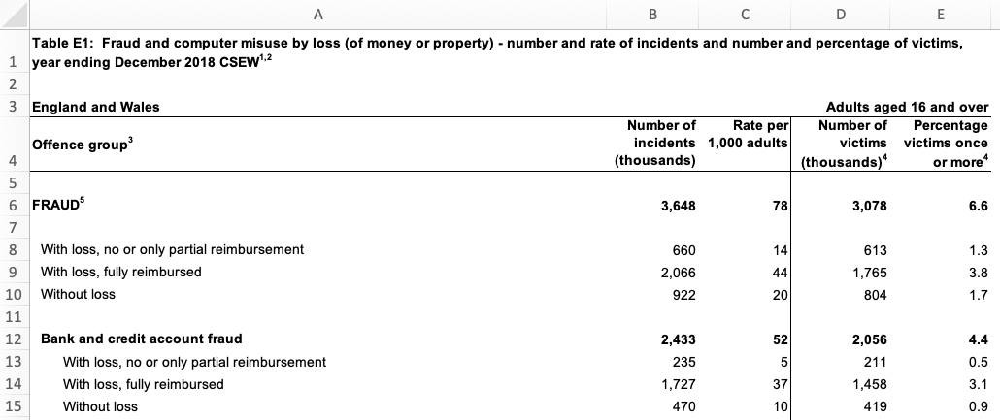
Looking at the row numbers on the left-hand side, we can see that the first row is taken up not with the column names (as they would be in a tidy dataset) but with the title of the dataset. The next row is blank, and the third row then contains some metadata to say that the data relates to England and Wales and to adults aged 16 and over. Only on row four do we see the column names. There are also blank rows within the data that are used to separate out different categories of data.
If we try to import this data using, for example, the read_excel() function from the readxl package, we will find various problems.
R Console
# Download the original spreadsheet into the `data/raw` folder
request(
"https://www.ons.gov.uk/file?uri=/peoplepopulationandcommunity/crimeandjustice/datasets/crimeinenglandandwalesexperimentaltables/yearendingdecember2018/additionalfraudandcybercrimetablesyearendingdecember2018correction.xlsx"
) |>
req_perform(path = here("data", "raw", "cybercrime.xlsx"))
read_excel(here("data", "raw", "cybercrime.xlsx"), sheet = "Table E1")New names:
• `` -> `...2`
• `` -> `...3`
• `` -> `...4`
• `` -> `...5`# A tibble: 46 × 5
Table E1: Fraud and computer misuse by loss (of mo…¹ ...2 ...3 ...4 ...5
<chr> <chr> <chr> <chr> <chr>
1 <NA> <NA> <NA> <NA> <NA>
2 England and Wales <NA> <NA> <NA> Adul…
3 Offence group3 Numb… Rate… Numb… Perc…
4 <NA> <NA> <NA> <NA> <NA>
5 FRAUD5 3648 78.0… 3078 6.58…
6 <NA> <NA> <NA> <NA> <NA>
7 With loss, no or only partial reimbursement 660 14.1… 613 1.31…
8 With loss, fully reimbursed 2066 44.2… 1765 3.77…
9 Without loss 922 19.7… 804 1.72…
10 <NA> <NA> <NA> <NA> <NA>
# ℹ 36 more rows
# ℹ abbreviated name:
# ¹`Table E1: Fraud and computer misuse by loss (of money or property) - number and rate of incidents and number and percentage of victims, year ending December 2018 CSEW1,2`It’s clear that this dataset has not loaded in the way that we want, because the first row doesn’t contain the column names. Fortunately, we can deal with this problem using the skip argument to the read_excel() function. This allows us to specify a number of rows to ignore at the start of the dataset. In this case, we want to ignore the first three rows of the data (the table title, a blank line and the metadata line), so we can specify skip = 3. The same skip argument also exists in the read_csv() function for reading CSV data and the read_tsv() function for reading tab-separated data.
# A tibble: 43 × 5
`Offence group3` Number of incidents …¹ Rate per 1,000 adult…²
<chr> <dbl> <dbl>
1 <NA> NA NA
2 FRAUD5 3648 78.0
3 <NA> NA NA
4 With loss, no or only partial … 660 14.1
5 With loss, fully reimbursed 2066 44.2
6 Without loss 922 19.7
7 <NA> NA NA
8 Bank and credit account fraud 2433 52.0
9 With loss, no or only partial … 235 5.03
10 With loss, fully reimbursed 1727 36.9
# ℹ 33 more rows
# ℹ abbreviated names: ¹`Number of incidents (thousands)`,
# ²`Rate per 1,000 adults`
# ℹ 2 more variables: `Number of victims (thousands)4` <dbl>,
# `Percentage victims once or more4` <dbl>This has dealt with the problem caused by the extra rows at the top of the data. But if we look at the bottom of the dataset, we will see that there are also several rows of footnotes. These footnotes are important for us to have read so that we understand the data, but they aren’t part of the data itself.
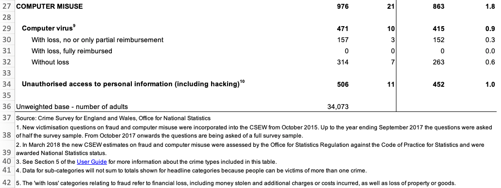
We can remove these extra rows at the end of our data using the slice() function from the dplyr package. slice() allows us to choose certain rows from our data by row number. Looking at the screenshot above, our data finishes on row 34 (row 36 looks like part of our data but the value there actually shows the number of people involved in the survey, not a number of incidents). But:
- we have already removed the first three rows using the
skipargument toread_excel(), and - row four of the original spreadsheet has become our column names,
so row 34 on the spreadsheet is actually row 30 in our loaded dataset. Knowing this, we can remove all the rows below row 30 using the slice() function from the dplyr package:
It’s important to check that we’ve sliced the correct number of rows, since it’s easy to miscalculate and get this wrong. We can check by using view() to open the whole dataset in a separate tab in Positron, or use the tail() function to print the last few rows of the data in the R Console:
# A tibble: 6 × 5
`Offence group3` Number of incidents …¹ Rate per 1,000 adult…²
<chr> <dbl> <dbl>
1 Computer virus9 471 10.1
2 With loss, no or only partial r… 157 3.36
3 With loss, fully reimbursed 0 0
4 Without loss 314 6.71
5 <NA> NA NA
6 Unauthorised access to personal… 506 10.8
# ℹ abbreviated names: ¹`Number of incidents (thousands)`,
# ²`Rate per 1,000 adults`
# ℹ 2 more variables: `Number of victims (thousands)4` <dbl>,
# `Percentage victims once or more4` <dbl>The final problem with the structure of this dataset is the blank rows that are used to separate different crime categories in the original table. We can deal with this using the remove_empty() function from the janitor package, which removes all rows and/or columns that contain only NA values. We will also clean the column names at the same time and then rename the columns to be shorter, which will make it easier to refer to them in our code.
R Console
cybercrime <- here("data", "raw", "cybercrime.xlsx") |>
read_excel(sheet = "Table E1", skip = 3) |>
slice(1:30) |>
remove_empty(which = "rows") |>
clean_names() |>
rename(
offence = offence_group3,
crimes = number_of_incidents_thousands,
incidence = rate_per_1_000_adults,
victims = number_of_victims_thousands_4,
prevalence = percentage_victims_once_or_more4
)
head(cybercrime)# A tibble: 6 × 5
offence crimes incidence victims prevalence
<chr> <dbl> <dbl> <dbl> <dbl>
1 FRAUD5 3648 78.0 3078 6.58
2 With loss, no or only partial reimburseme… 660 14.1 613 1.31
3 With loss, fully reimbursed 2066 44.2 1765 3.78
4 Without loss 922 19.7 804 1.72
5 Bank and credit account fraud 2433 52.0 2056 4.40
6 With loss, no or only partial reimburseme… 235 5.03 211 0.451This dataset now has a tidy structure: each row represents an observation (in this case, data about a particular type of crime), each column represents a piece of information about the observation and each cell represents a single value. We still need to clean up the footnote numbers that appear in some of the values, but we will deal with that later in this chapter.
10.2.3 Separating multiple variables stored in a single column
Sometimes datasets include multiple variables in a single column. For example, data about crime victims stored in an object called victims might include a single column representing both age and sex.
| first_name | last_name | age_sex |
|---|---|---|
| Kareem | David | 26/M |
| Lyda | Gartrell | 40 |
| Lisa | Dean | 21/F |
| Melina | Shehan | 25/F |
| Alfredo | Matamoros | 18/M |
It would be easier to wrangle this data (e.g. to filter by age) if the data in the age_sex column was stored in two separate columns. Making this change would also make sure our data meets the definition of being tidy: every variable should be stored in a separate column.
We can split the age_sex column into two using the separate_wider_delim() function from the tidyr package. We specify the existing column we want to split, the names of the new columns using the names argument and the character that separates the two pieces of data using the delim argument (in this case, /).
R Console
# Create an example dataset of fictional crime victims
victims <- tribble(
~first_name , ~last_name , ~age_sex ,
"Kareem" , "David" , "26/M" ,
"Lyda" , "Gartrell" , "40" ,
"Lisa" , "Dean" , "21/F" ,
"Melina" , "Shehan" , "25/F" ,
"Alfredo" , "Matamoros" , "18/M"
)
# Separate `age_sex` column into separate columns for age and sex
separate_wider_delim(
victims,
cols = age_sex,
delim = "/",
names = c("age", "sex")
)Error in `separate_wider_delim()`:
! Expected 2 pieces in each element of `age_sex`.
! 1 value was too short.
ℹ Use `too_few = "debug"` to diagnose the problem.
ℹ Use `too_few = "align_start"/"align_end"` to silence this message.This code produces an error because the second row of the data contains only one of the two expected pieces – we don’t know the value of the new column called sex for the row of data for Lyda Gartrell. In this example, we want the value 40 to go into the age column and the missing sex value to be recorded as NA. We can do this by specifying too_few = "align_start".
Because the original age_sex column stored text, both new columns initially contain text, too. Since age is numeric, we can convert it after separating the columns using parse_number().
# A tibble: 5 × 4
first_name last_name age sex
<chr> <chr> <dbl> <chr>
1 Kareem David 26 M
2 Lyda Gartrell 40 <NA>
3 Lisa Dean 21 F
4 Melina Shehan 25 F
5 Alfredo Matamoros 18 M We have practised converting data into a tidy format using pivot_longer() and pivot_wider(), removing non-data rows using slice(), remove_empty() and the skip argument to functions such as read_csv(), and splitting columns with separate_wider_delim(). In the next section, we’ll learn how to tidy the content of individual cells.
What issue might arise when working with wide-format data?
Which of the following best describes a tidy dataset?
Which function is used to convert wide data to long format in R?
You want each crime type in a long dataset to become a separate column in a presentation table. What should you do?
10.3 Tidying the content of cells
As well as data with a messy structure, you might be provided with data with messy content inside some of the cells. In this section we will clean messy content, mostly using functions from the stringr package that is loaded automatically when we load tidyverse. Most of the main string-manipulation functions introduced here start with str_, which makes them easier to remember.
We can change the case of text using one of four str_to_ functions:
| input | function | output |
|---|---|---|
| A stRinG oF TeXT | `str_to_lower()` | a string of text |
| A stRinG oF TeXT | `str_to_upper()` | A STRING OF TEXT |
| A stRinG oF TeXT | `str_to_sentence()` | A string of text |
| A stRinG oF TeXT | `str_to_title()` | A String Of Text |
We can also remove unwanted text from within values. For example, if there is unwanted white-space (spaces, tabs, etc.) at the beginning or end of a string of characters, we can remove it with str_trim(). str_squish() does the same thing, but also reduces any repeated white-space characters in a string of text down to a single space. For example, str_squish(" A string of text") produces the result A string of text.
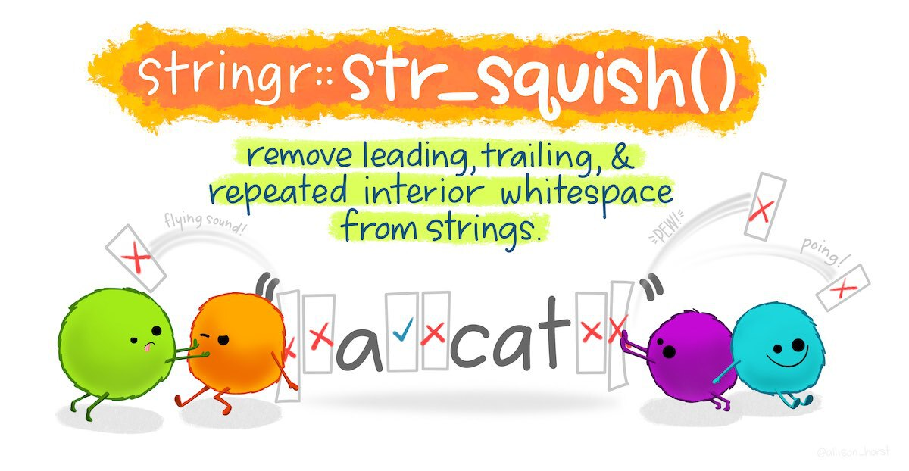
Data from the UK police open data website includes the words ‘on or near’ at the start of every value in the location column of the data. This is to remind users that the locations of crimes are deliberately obscured by being ‘snapped’ to the centre of the street on which they occur to protect victims’ privacy.
| month | longitude | latitude | location | lsoa_name |
|---|---|---|---|---|
| 2020-01 | -1.120 | 53.3 | On or near Supermarket | Bassetlaw 013C |
| 2020-02 | -0.993 | 53.2 | On or near Turner Lane | Newark and Sherwood 001A |
| 2020-10 | -1.180 | 53.0 | On or near Langley Close | Ashfield 013A |
We don’t need this constant value for analysis, and for large datasets it can unnecessarily increase the size of the data when we save it to a file. For this reason we might want to remove this constant value using the str_remove() function. To see how this works, let’s create a small example dataset similar to the UK police open data and then remove the constant text from the location column.
R Console
# Create example dataset similar to UK police open data
uk_data <- tribble(
~month , ~longitude , ~latitude , ~location , ~lsoa_name ,
"2020-01" , -1.12 , 53.3 , "On or near Supermarket" , "Bassetlaw 013C" ,
"2020-02" , -0.993 , 53.2 , "On or near Turner Lane" , "Newark and Sherwood 001A" ,
"2020-10" , -1.18 , 53.0 , "On or near Langley Close" , "Ashfield 013A"
)
# Remove constant text from the location column
uk_data |> mutate(location = str_remove(location, "On or near "))# A tibble: 3 × 5
month longitude latitude location lsoa_name
<chr> <dbl> <dbl> <chr> <chr>
1 2020-01 -1.12 53.3 Supermarket Bassetlaw 013C
2 2020-02 -0.993 53.2 Turner Lane Newark and Sherwood 001A
3 2020-10 -1.18 53 Langley Close Ashfield 013A The lsoa_name code of this dataset includes the name of the small statistical area in which each crime occurred. Each name is made up of the name of the local government district covering the area followed by a unique code. If we wanted to extract just the district name (for example so we could count the number of crimes in each district) we can do that by removing the code that follows the district name. To do this we need to use a regular expression, which is a way of describing a pattern in a string of characters. Regular expressions can be used to find, extract or remove characters that match a specified pattern.
Regular expressions can be complicated, so we will only scratch the surface of what’s possible here. You can find out much more about them in the article on regular expressions included in the stringr package.
The coded description of the pattern of characters we need to match the code at the end of the lsoa_name column is \\s\\w{4}$. This is made up of three parts:
\\smeans match exactly one white-space character (e.g. a space or a tab),\\w{4}means match exactly four word characters (i.e. letters, numbers or underscores), and$means match the end of the string.
So \\s\\w{4}$ means match exactly one white-space character followed by exactly four word characters at the end of the string. We can use this pattern as the second argument to the str_remove() function to remove the characters matched by the pattern.
# A tibble: 3 × 2
lsoa_name district
<chr> <chr>
1 Bassetlaw 013C Bassetlaw
2 Newark and Sherwood 001A Newark and Sherwood
3 Ashfield 013A Ashfield Instead of using a regular expression to remove characters, we could instead use regular expressions together with str_extract() to keep only the characters matched by the pattern, str_replace() to replace the first group of characters matched by the pattern and str_replace_all() to replace all the groups of characters matched by the pattern. For more tips on using regular expressions together with functions from the stringr package, see the stringr package cheat sheet or visit regexr.com.
10.3.1 Converting between types of variable
Sometimes columns in your data will be stored as the wrong type of variable. read_csv() and other functions from the readr package try to guess what type of variable is contained in each column based on what is contained in the first few rows, but this does not always work. For example, a variable containing numbers might be stored as characters, meaning functions like mean() will not work.
Warning in mean.default(numbers_as_text): argument is not numeric or logical:
returning NA[1] NAIn cases like this, we can use the parse_number() function from the readr package (part of tidyverse) to convert the character variable into a numeric variable.
[1] 12.33333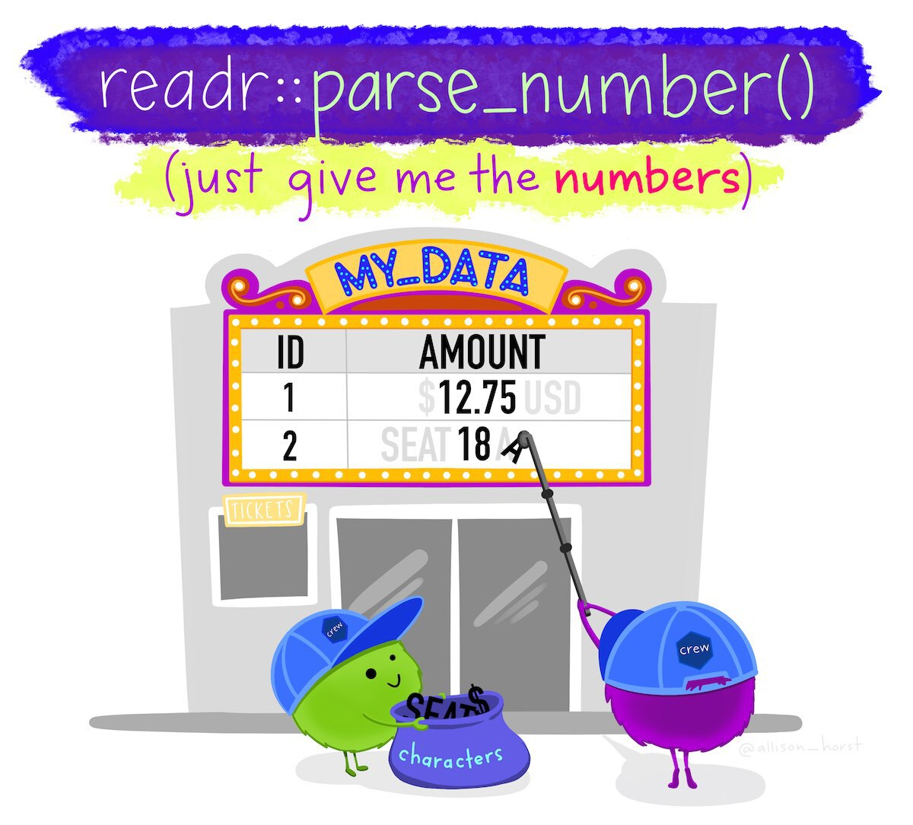
We can use other functions in the parse_*() family to convert character values to other data types. For example, we can use parse_logical() to convert true/false values stored as text to TRUE and FALSE values. Be careful, though: if you try to convert a variable to a data type that makes no sense, you are likely to find all of your values replaced with NA.
Sometimes numbers will be stored alongside other values, such as when currency values are stored together with a currency symbol. We can also deal with values like these by using parse_number(), which strips all the non-numeric characters from a value and then converts the numeric characters to a number. For example, parse_number("Room 14A") produces the numeric value 14.
parse_number() removes
parse_number() can sometimes throw away useful non-numeric information. In "Room 14A", for example, the letter A might be an important part of the room identifier. Always check that the characters removed by parse_number() do not carry information that you need to keep.
If there are multiple columns in a dataset that store non-text data as character values, we can also use the type_convert() function from the readr package to automatically convert them all.
10.3.2 Recoding categorical variables
Crime data often includes categorical variables, such as crime types or location categories. It can be useful to change these categories, for example so that we can join two datasets or abbreviate category names for use in the axis labels of a chart.
We can use the if_else() function from the dplyr package to change particular values, but this only allows us to change a single value and can produce slightly untidy code. Instead we can use the replace_values() function from the dplyr package to change one or more values at the same time. For example, imagine we wanted to change the value Supermarket to Shop in the UK police data.
# A tibble: 3 × 5
month longitude latitude location lsoa_name
<chr> <dbl> <dbl> <chr> <chr>
1 2020-01 -1.12 53.3 Shop Bassetlaw 013C
2 2020-02 -0.993 53.2 Turner Lane Newark and Sherwood 001A
3 2020-10 -1.18 53 Langley Close Ashfield 013A The first argument to replace_values() is the name of the variable containing values to be replaced. That is followed by one or more formulas showing which values should be changed and what they should be changed to. The old and new values are separated by a tilde (~), with the old value on the left. Any values that do not match a formula keep their existing values.
We can use replace_values() to make more-complicated changes. For example, we can change multiple values at the same time, including merging different values into the same new value:
# A tibble: 3 × 5
month longitude latitude location lsoa_name
<chr> <dbl> <dbl> <chr> <chr>
1 2020-01 -1.12 53.3 Shop Bassetlaw 013C
2 2020-02 -0.993 53.2 Turner Lane Newark and Sherwood 001A
3 2020-10 -1.18 53 Bestwood Village Ashfield 013A 10.3.3 Missing values
We have already encountered the NA value, which R uses to represent a value that is missing from a dataset. While R uses NA to represent missing values, some data providers use other codes. For example, a data provider might use a dash (-) or two periods (..) to represent missing values. Fortunately, we can convert any value to NA so that we know that it represents a missing value.
Imagine that you have been provided with a dataset of burglaries that includes an estimate of the value of the goods that were stolen in British pounds. You have been told that when the value of the stolen goods wasn’t known, this is recorded as the value -1 in the data. If we use mean() to estimate the average value of property stolen, the value -1 will give us an incorrect result.
R Console
# Create a dataset of burglary dates/times with the value of goods stolen
burglary_values <- tribble(
~crime_number , ~value ,
182304 , 1320 ,
294715 , 653 ,
405826 , 2068 ,
516937 , -1 ,
627048 , 580
)
# Try to calculate the mean value -- no error, but the answer is wrong
# `pull()` is used to extract the `value` column from `burglary_values`
burglary_values |> pull("value") |> mean()[1] 924If we instead convert the value -1 to NA first, mean() will know to ignore that value as long as we specify the argument na.rm = TRUE.
[1] 1155.25Excluding the value -1 makes a substantial difference to the mean, increasing it by over £100.
Sometimes a row cannot be used for a particular analysis because a value that the analysis needs is missing. The drop_na() function removes rows containing NA in the columns we specify. For example, this code removes only rows in which the address value is missing:
# A tibble: 2 × 3
incident address category
<dbl> <chr> <chr>
1 1 10 HIGH STREET burglary
2 3 25 STATION ROAD <NA> The third row remains even though its category value is missing, because we specified only the address column. In contrast, drop_na(example_addresses) would remove every row containing an NA in any column, leaving only the first row.
Do not routinely remove every incomplete row. A missing value in one column does not necessarily make the rest of that row unusable. Remove a row only when a missing value means that the row cannot be used for the analysis you intend to carry out. In the geocoding example later in this chapter, an address is essential, so rows with missing addresses cannot be sent to the geocoding service.
10.3.4 Null Island
The problem of missing values being stored as numbers manifests itself in a particularly frustrating way when it comes to spatial data. People and organisations that produce spatial datasets sometimes record missing coordinates as being zero, instead of being missing. This is a problem because the longitude/latitude coordinates “0, 0” correspond to a real location on the surface of the earth, in the Gulf of Guinea off the coast of Ghana. This location is incorrectly recorded in spatial datasets so often that it’s become known as Null Island. Watch this video to find out more about Null Island and the problems it causes.
So if you see any coordinates on your map located in the Gulf of Guinea, off the coast of West Africa, you know that there are almost certainly rows in your data that have coordinates located at Null Island.
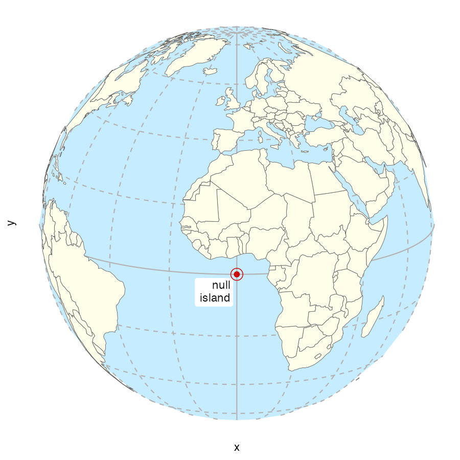
When we make crime maps we are generally dealing with small areas such as cities and counties. So if you plot a dataset on a map and instead of seeing a map of the area you are interested in, you see a large area of the world with the place you are interested in in one corner and Null Island in the opposite corner, that almost certainly means some coordinates are located at Null Island.
As an example, imagine we were trying to create a map of the home addresses of several (fictional) suspects for bank fraud in and around Cairo, Egypt. The data contain 10 rows stored in an object called cairo_suspects that looks like this:
| name | address | lon | lat |
|---|---|---|---|
| Ahmed Hussein Ayman | 94, El Sheikh Abd El Jalil Issa Street, Al Banafseg 8, Banafseg Districts, New Cairo City, Cairo | 31.46236 | 30.04954 |
| Mohamed Ali Mohamed | 22, Noran Street, Al Salam First, Al Qalyubiya | 31.40320 | 30.16475 |
| Mahmoud Mostafa Ali | 43, Tarek Gamal Street, Cairo | 31.29651 | 30.11844 |
| Omar El-Badawi | 7, Abou Bakr Al Sediq Street, Al-Obour, Al Qalyubiya | 31.37844 | 30.17814 |
| Tarek Hazim Abdel-Rahman | 16, Al Madina Al Mnoura Street, Ma‘ di, Cairo | 31.26321 | 29.97942 |
| Youssef Sayyid | 18, Fathy Abou Wedn Street, Shubra al Khayma, Al Qalyubiya | 31.34177 | 30.15624 |
| Hussein El-Masri | 61, Al Ashgar Street, South West, El Shorouk City, May Fair, Cairo | 31.61096 | 30.12838 |
| Mariam Abdel Mubarak | 15R, Mohamed Farid Street, EL Sheikh Mubarak, Cairo | 31.24903 | 29.99366 |
| Farah Youssef Anwar | 35, Al Sadat Road, Neighborhood 9, El Shorouk City, Sunrise, Cairo | 31.62810 | 30.14780 |
| Nour El-Seifi | 23, Moustafa Kamel Street, Area 2, Badr, Cairo | 0.00000 | 0.00000 |
If we plotted these locations on a map, we might expect to see something like this:
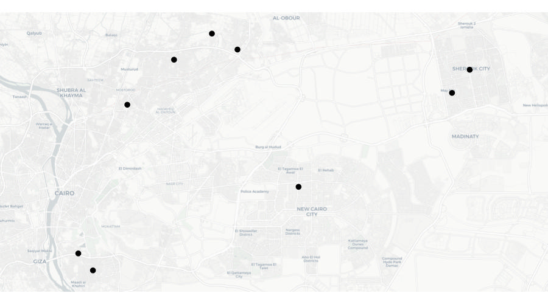
But look again at the final row of data in the table above – the coordinates for the final row are both zero. There are several reasons why this might be. Perhaps the address was recorded incorrectly in a police database and that meant that when the addresses were run through geocoding software (which we will learn more about in the next section), no coordinates for that row could be found. What this means is that when we plot the data on a map, that map will actually look like this:
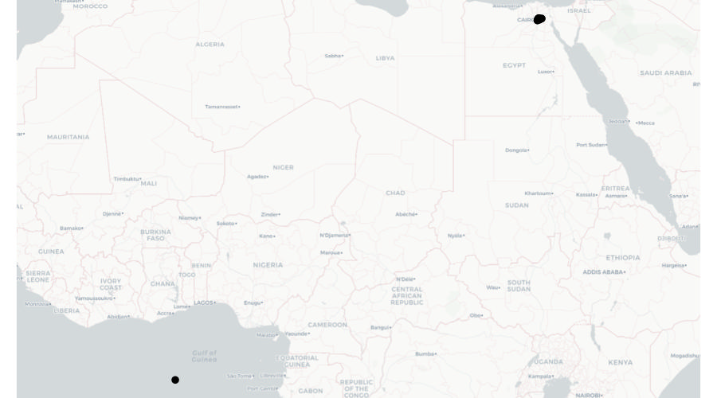
What we can see here is that most of the points on this map are correctly located in and around Cairo, but a single point is incorrectly located at Null Island.
We can deal with the problem of our data including points located at Null Island using the hotspot_clip() function that we previously used to clip datasets to the boundaries of other datasets. In this case, hotspot_clip() removes any rows from the data that are not within the area that the data is supposed to cover.
For example, we know that all the addresses of bank fraud suspects are supposed to be in Egypt, so we can safely clip the suspect data to the boundary of Egypt before mapping the data. There are lots of sources of data on the outlines of countries, but perhaps the most convenient to use in R is the data provided by the rnaturalearth package. We can use the ne_countries() function to retrieve the outline of Egypt as an SF object, which we can then use to clip the suspect dataset.
R Console
# Create dataset of fictional fraud suspects in Cairo
# Note these lines are more than 80 characters long, since if we don't keep each
# row in the dataset on a single line of code, it becomes very difficult to work
# out which fields will end up in which rows
cairo_suspects <- tibble::tribble(
~name , ~address , ~lon , ~lat ,
"Ahmed Hussein Ayman" , "94, El Sheikh Abd El Jalil Issa Street, Al Banafseg 8, Banafseg Districts, New Cairo City, Cairo" , 31.4623637 , 30.049543 ,
"Mohamed Ali Mohamed" , "22, Noran Street, Al Salam First, Al Qalyubiya" , 31.4032012 , 30.1647536 ,
"Mahmoud Mostafa Ali" , "43, Tarek Gamal Street, Cairo" , 31.296507 , 30.1184382 ,
"Omar El-Badawi" , "7, Abou Bakr Al Sediq Street, Al-Obour, Al Qalyubiya" , 31.3784444 , 30.1781414 ,
"Tarek Hazim Abdel-Rahman" , "16, Al Madina Al Mnoura Street, Ma‘ di, Cairo" , 31.2632149 , 29.9794155 ,
"Youssef Sayyid" , "18, Fathy Abou Wedn Street, Shubra al Khayma, Al Qalyubiya" , 31.3417734 , 30.1562442 ,
"Hussein El-Masri" , "61, Al Ashgar Street, South West, El Shorouk City, May Fair, Cairo" , 31.6109636 , 30.1283769 ,
"Mariam Abdel Mubarak" , "15R, Mohamed Farid Street, EL Sheikh Mubarak, Cairo" , 31.2490346 , 29.9936643 ,
"Farah Youssef Anwar" , "35, Al Sadat Road, Neighborhood 9, El Shorouk City, Sunrise, Cairo" , 31.6280994 , 30.1478049 ,
"Nour El-Seifi" , "23, Moustafa Kamel Street, Area 2, Badr, Cairo" , 0 , 0
) |>
st_as_sf(coords = c("lon", "lat"), crs = "EPSG:4326")
# By default, `ne_countries()` does not return an SF object, so we have to
# specify that is what we want using the `returnclass = "sf"` argument
egypt_outline <- rnaturalearth::ne_countries(
country = "Egypt",
returnclass = "sf"
)
# Clip dataset to the boundary of Egypt
cairo_suspects_valid <- hotspot_clip(cairo_suspects, egypt_outline)Warning in hotspot_clip(cairo_suspects, egypt_outline): `data` has points with the co-ordinates "0, 0".
ℹ This usually indicates a problem with the data.
ℹ Check co-ordinates are correct (e.g. by mapping them).Removed 1 rows (10.0% of original rows) from `data`Now if we were to plot a map using the cairo_suspects_valid object, we would see the map covered only the Cairo area, as we originally wanted. Incidentally, you can see that hotspot_clip() knows that data with the coordinates 0,0 are usually a problem, and has warned us about this.
What does str_squish() do?
What happens to values that do not match a formula supplied to replace_values()?
A row has no address but contains other useful information. What should you do?
What is the most likely explanation if one point appears at Null Island?
10.4 Geocoding locations
Throughout this course we have used geographic data that includes locations stored as pairs of coordinates, e.g. latitude and longitude or easting and northing. Sometimes geographic data will not contain coordinates but instead store the locations of places or events as free-text addresses.
Address fields can be very messy indeed. This is because addresses can often be stored in different formats, include different abbreviations or use different spellings (including typos). For example, the official postal address ‘Kelley’s Grill & Bar, 15540 State Avenue, Basehor, Kansas 66007, United States’ could be stored in a local police report as:
- Kelly’s Bar, 15540 US Highway 40, Basehor
- Kelley’s Grille, 15540 State
- Kelley’s, 15540 State Av
- Kelley’s Bar and Grill, 15540 State Ave
- Kelley’s Bar, State Av and 155th St
- Kelly’s Grill, State Ave btwn 155 and 158
All of these address descriptions would probably be good enough for local police officers to know which building the author intended to reference. But since all these different addresses relate to the same physical location, they would make it very hard to (for example) work out how many incidents had occurred at Kelley’s Grill & Bar using count() or a similar function.
To make use of data containing addresses, it is typically necessary to geocode the locations, i.e. to convert the addresses into coordinates. The many ways to describe an address mean that geocoding is often quite hard.
We can geocode addresses in R using the tidygeocoder package, which provides an interface to several online geocoding services.
Running a geocoding service requires an organisation to maintain a database of many millions of addresses and process large numbers of queries. Providers may limit how many addresses can be geocoded, charge for access or require users to register. Coverage, prices and usage limits change, so always check the provider’s current terms before choosing a service. The tidygeocoder website has an up-to-date comparison of supported services.
For this small exercise we will use Nominatim, which does not require registration and works worldwide. The public Nominatim server is intended for modest use, so read and follow its usage policy before using it outside this exercise.
Geocoding sends address data to an external organisation. Do not use a public service to geocode confidential or sensitive records unless you have confirmed that doing so is permitted and appropriate. The data in this exercise are fictional.
To illustrate the geocoding process, we will find coordinates for the addresses in the object addresses, which holds fictional data for 10 sexual assaults in Chicago. The incidents and their connection to these addresses are invented for teaching.
Create a new R script in Positron and save it as chapter_10.R in the R folder. Keep all the permanent code for the geocoding analysis in this file.
| offense_date | location_type | address |
|---|---|---|
| 2019-01-01T00:00:00Z | residence | 2400 W Carmen Ave |
| 2019-01-01T00:00:00Z | residence | 2700 S TRIPP AVE |
| 2019-01-01T11:44:00Z | residence | 3700 S PAULINA ST |
| 2019-01-01T11:44:00Z | residence | 3700 S Paulina St |
| 2019-01-01T16:37:00Z | government | 1100 S HAMILTON AVE |
| 2019-01-02T17:09:00Z | gas station | NA |
| 2019-01-02T17:09:00Z | gas station | 8200 S HALSTED ST |
| 2019-01-05T00:01:00Z | residence | 1300 N HUDSON AVE |
| 2019-01-05T14:00:00Z | other | 6200 N Claremont Ave |
| 2019-01-07T06:50:00Z | residence | 9500 S BELL AVE |
Since most geocoding services limit the number of addresses you can look up at a time, the first step in geocoding is removing duplicate addresses and rows with missing address values. This avoids us geocoding identical addresses several times, which would otherwise unnecessarily increase our chance of hitting the limit on geocoding queries each day.
We will also add the city, state and country to the end of each address, since at the moment (as with much data produced by local organisations) it includes only the building number and street. Including the country applies the same principle that we would use when geocoding addresses outside the United States.
chapter_10.R
# This script prepares and geocodes fictional incident addresses in Chicago.
# Load packages
pacman::p_load(sf, sfhotspot, tidygeocoder, tidyverse)
# Create example dataset of addresses to be geocoded
addresses <- tribble(
~"offense_date" , ~"location_type" , ~"address" ,
"2019-01-01T00:00:00Z" , "residence" , "2400 W Carmen Ave" ,
"2019-01-01T00:00:00Z" , "residence" , "2700 S TRIPP AVE" ,
"2019-01-01T11:44:00Z" , "residence" , "3700 S PAULINA ST" ,
"2019-01-01T11:44:00Z" , "residence" , "3700 S Paulina St" ,
"2019-01-01T16:37:00Z" , "government" , "1100 S HAMILTON AVE" ,
"2019-01-02T17:09:00Z" , "gas station" , NA ,
"2019-01-02T17:09:00Z" , "gas station" , "8200 S HALSTED ST" ,
"2019-01-05T00:01:00Z" , "residence" , "1300 N HUDSON AVE" ,
"2019-01-05T14:00:00Z" , "other" , "6200 N Claremont Ave" ,
"2019-01-07T06:50:00Z" , "residence" , "9500 S BELL AVE" ,
)
# Prepare each distinct, non-missing address for geocoding
addresses_for_geocoding <- addresses |>
# Drop rows that have NA values in the `address` column
drop_na(address) |>
# Add city, state and country, then convert to upper case so that `distinct()`
# will not treat identical addresses as different because of different cases,
# e.g. 'ST' vs 'St' as abbreviations for 'Street'
mutate(
address = str_to_upper(str_glue("{address}, CHICAGO, IL, UNITED STATES"))
) |>
# Select only the address column, since we won't send the other columns to the
# geocoding function
select(address) |>
# Find all the unique rows in the data
distinct(address)# A tibble: 8 × 1
address
<chr>
1 2400 W CARMEN AVE, CHICAGO, IL, UNITED STATES
2 2700 S TRIPP AVE, CHICAGO, IL, UNITED STATES
3 3700 S PAULINA ST, CHICAGO, IL, UNITED STATES
4 1100 S HAMILTON AVE, CHICAGO, IL, UNITED STATES
5 8200 S HALSTED ST, CHICAGO, IL, UNITED STATES
6 1300 N HUDSON AVE, CHICAGO, IL, UNITED STATES
7 6200 N CLAREMONT AVE, CHICAGO, IL, UNITED STATES
8 9500 S BELL AVE, CHICAGO, IL, UNITED STATES Run this code in the R Console to inspect the prepared addresses:
Since two addresses in the data were duplicates and one address was missing, we now have eight unique addresses, stored in a tibble with a single column. The drop_na(address) call removes only the row that cannot be geocoded, rather than discarding rows because values in unrelated columns are missing.
We can use this object as the input to the geocode() function from the tidygeocoder package. tidygeocoder sends address text to a geocoding service and returns matching coordinates. The address argument specifies which column contains the addresses and the method argument specifies which geocoding service to use. Nominatim is based on OpenStreetMap data, so we choose it by specifying method = "osm".
# A tibble: 8 × 3
address lat long
<chr> <dbl> <dbl>
1 2400 W CARMEN AVE, CHICAGO, IL, UNITED STATES 42 -87.7
2 2700 S TRIPP AVE, CHICAGO, IL, UNITED STATES 41.8 -87.7
3 3700 S PAULINA ST, CHICAGO, IL, UNITED STATES 41.8 -87.7
4 1100 S HAMILTON AVE, CHICAGO, IL, UNITED STATES 41.9 -87.7
5 8200 S HALSTED ST, CHICAGO, IL, UNITED STATES 41.7 -87.6
6 1300 N HUDSON AVE, CHICAGO, IL, UNITED STATES 41.9 -87.6
7 6200 N CLAREMONT AVE, CHICAGO, IL, UNITED STATES 42 -87.7
8 9500 S BELL AVE, CHICAGO, IL, UNITED STATES 41.7 -87.7Now that we have the latitude and longitude for each address, we can join them back to the original data using the address column to match the two datasets together. To do this we will create a temporary column in the original addresses object that matches the formatting changes we made to the original address.
chapter_10.R
# Join the geocoded coordinates back to the original rows
addresses_final <- addresses |>
# Create a temporary address column to use in matching the geocoded addresses
mutate(
temp_address = str_to_upper(str_glue(
"{address}, CHICAGO, IL, UNITED STATES"
))
) |>
# `left_join()` keeps all the rows in the left-hand dataset (the original
# `addresses` object) and matching rows in the right-hand dataset (the
# geocoding results)
left_join(addresses_geocoded, by = c("temp_address" = "address")) |>
# Remove the temporary address column
select(-temp_address)
addresses_final# A tibble: 10 × 5
offense_date location_type address lat long
<chr> <chr> <chr> <dbl> <dbl>
1 2019-01-01T00:00:00Z residence 2400 W Carmen Ave 42 -87.7
2 2019-01-01T00:00:00Z residence 2700 S TRIPP AVE 41.8 -87.7
3 2019-01-01T11:44:00Z residence 3700 S PAULINA ST 41.8 -87.7
4 2019-01-01T11:44:00Z residence 3700 S Paulina St 41.8 -87.7
5 2019-01-01T16:37:00Z government 1100 S HAMILTON AVE 41.9 -87.7
6 2019-01-02T17:09:00Z gas station <NA> NA NA
7 2019-01-02T17:09:00Z gas station 8200 S HALSTED ST 41.7 -87.6
8 2019-01-05T00:01:00Z residence 1300 N HUDSON AVE 41.9 -87.6
9 2019-01-05T14:00:00Z other 6200 N Claremont Ave 42 -87.7
10 2019-01-07T06:50:00Z residence 9500 S BELL AVE 41.7 -87.7Geocoding services return possible matches rather than guaranteed correct answers. Check for missing results and plot the returned coordinates to make sure they are in plausible locations before using them in an analysis.
We can now use this data as we would any other spatial data. We will convert addresses_final to an SF object using st_as_sf(). Geocoding services return longitude and latitude using the WGS84 coordinate reference system, so we specify crs = "EPSG:4326". We first remove the row with the missing address, since it could not be geocoded and therefore has no coordinates.
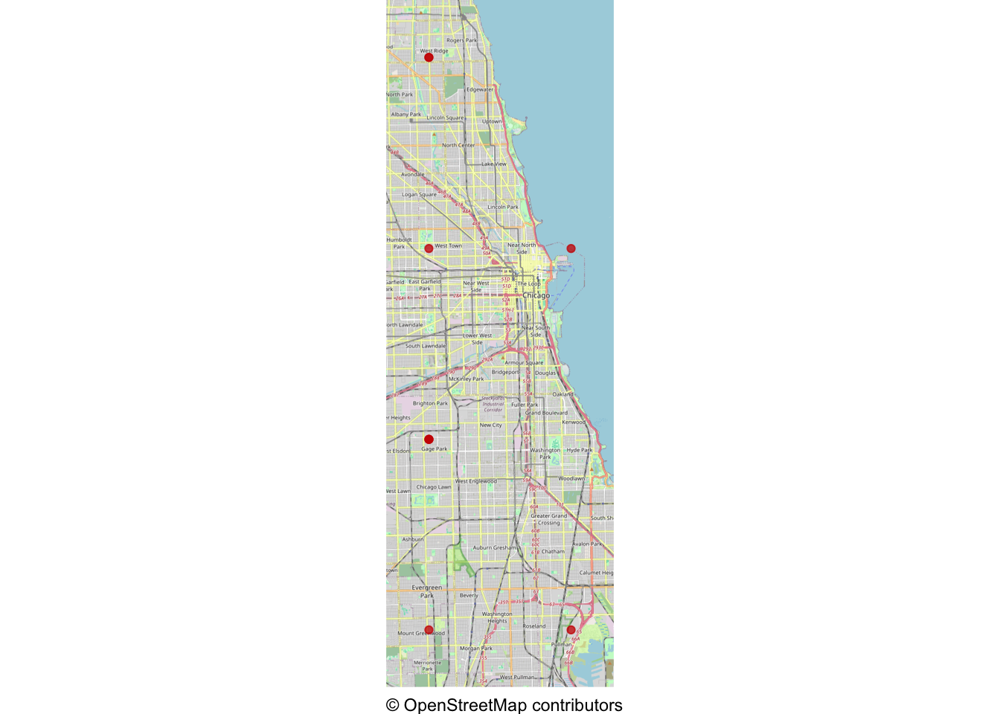
All eight points should appear within Chicago. A missing point or a point far outside the city would tell us that we need to inspect the corresponding address and geocoding result before continuing with the analysis.
How should you prepare a dataset before sending its addresses to a rate-limited geocoding service?
What does tidygeocoder do in this exercise?
What should you do with geocoding results before relying on them?
10.5 In summary
In this chapter we have learned to tidy messy data to make it easier to work with. In real-world data analysis (not just crime mapping), you will often have to deal with data that is messy in different ways. R allows us to clean data reproducibly, so that we can inspect the code used to make every change and reduce the risk of introducing mistakes.
We have practised how to:
- reshape data between long and wide formats using
pivot_longer()andpivot_wider(); - skip or remove rows that are not part of a dataset;
- separate multiple variables stored in one column;
- clean and recode text, numeric and categorical values;
- recognise missing or invalid values and remove rows only when necessary;
- prepare, geocode and check address data.
Your complete chapter_10.R script should now look like this:
chapter_10.R
# This script prepares and geocodes fictional incident addresses in Chicago.
# Load packages
pacman::p_load(sf, sfhotspot, tidygeocoder, tidyverse)
# Create example dataset of addresses to be geocoded
addresses <- tribble(
~"offense_date" , ~"location_type" , ~"address" ,
"2019-01-01T00:00:00Z" , "residence" , "2400 W Carmen Ave" ,
"2019-01-01T00:00:00Z" , "residence" , "2700 S TRIPP AVE" ,
"2019-01-01T11:44:00Z" , "residence" , "3700 S PAULINA ST" ,
"2019-01-01T11:44:00Z" , "residence" , "3700 S Paulina St" ,
"2019-01-01T16:37:00Z" , "government" , "1100 S HAMILTON AVE" ,
"2019-01-02T17:09:00Z" , "gas station" , NA ,
"2019-01-02T17:09:00Z" , "gas station" , "8200 S HALSTED ST" ,
"2019-01-05T00:01:00Z" , "residence" , "1300 N HUDSON AVE" ,
"2019-01-05T14:00:00Z" , "other" , "6200 N Claremont Ave" ,
"2019-01-07T06:50:00Z" , "residence" , "9500 S BELL AVE" ,
)
# Prepare each distinct, non-missing address for geocoding
addresses_for_geocoding <- addresses |>
# Drop rows that have NA values in the `address` column
drop_na(address) |>
# Add city, state and country, then convert to upper case so that `distinct()`
# will not treat identical addresses as different because of different cases,
# e.g. 'ST' vs 'St' as abbreviations for 'Street'
mutate(
address = str_to_upper(str_glue("{address}, CHICAGO, IL, UNITED STATES"))
) |>
# Select only the address column, since we won't send the other columns to the
# geocoding function
select(address) |>
# Find all the unique rows in the data
distinct(address)
# Geocode each address using Nominatim
addresses_geocoded <- tidygeocoder::geocode(
addresses_for_geocoding,
address = "address",
method = "osm"
)
# Join the geocoded coordinates back to the original rows
addresses_final <- addresses |>
# Create a temporary address column to use in matching the geocoded addresses
mutate(
temp_address = str_to_upper(str_glue(
"{address}, CHICAGO, IL, UNITED STATES"
))
) |>
# `left_join()` keeps all the rows in the left-hand dataset (the original
# `addresses` object) and matching rows in the right-hand dataset (the
# geocoding results)
left_join(addresses_geocoded, by = c("temp_address" = "address")) |>
# Remove the temporary address column
select(-temp_address)
addresses_final
# Convert the geocoded results to an SF object and plot them over a basemap
addresses_sf <- addresses_final |>
drop_na(long, lat) |>
st_as_sf(coords = c("long", "lat"), crs = "EPSG:4326")
hotspot_map(addresses_sf, colour = "#CC0000")Save chapter_10.R by pressing .
To check that the analysis is reproducible, restart R using the Restart R (⟳) button in Positron’s Console panel, then run the script from beginning to end.
Keep the script in the R folder.
You can find out more about data cleaning and tidying with these resources:
Answer these questions to check you have understood the main points covered in this chapter. Write between 50 and 100 words to answer each question.
- Why is tidy data important in crime mapping and data analysis? Explain the key principles of tidy data and discuss how its structure makes data analysis more efficient.
- What are the differences between long and wide data formats? Give an example of when you would use
pivot_longer()and when you would usepivot_wider(). - Describe how multiple variables stored in a single column can be separated into distinct columns, and what issues might arise in doing this.
- Why can routinely removing every row that contains a missing value be harmful? Explain when using
drop_na()is appropriate. - How does geocoding with tidygeocoder differ from retrieving mapped features from OpenStreetMap? What checks should you make after geocoding addresses?
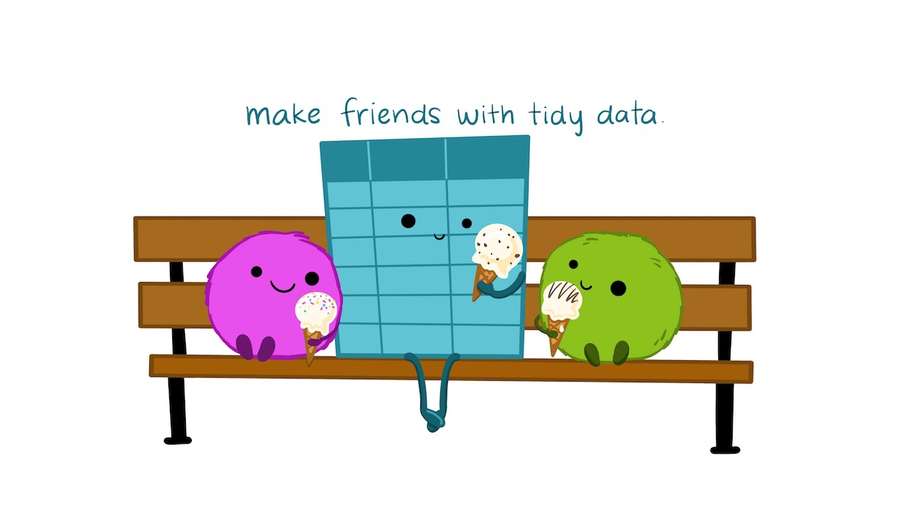